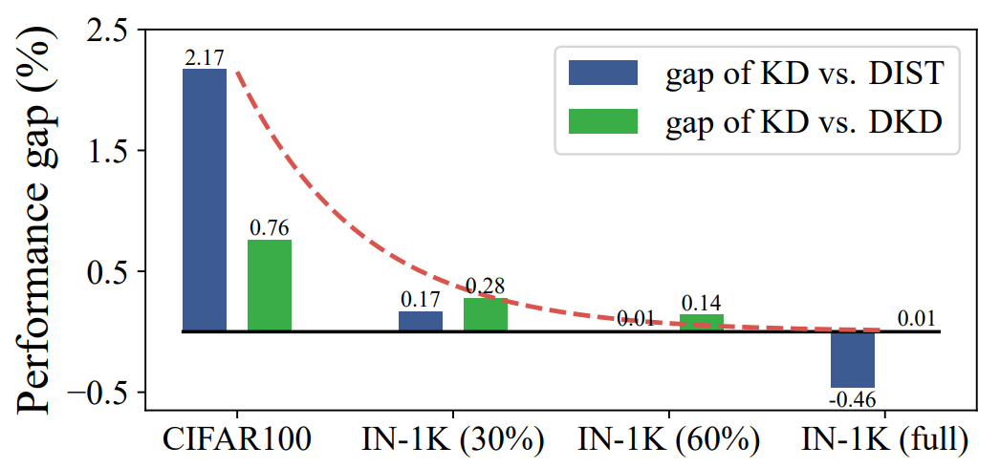

重参数化与蒸馏
知识蒸馏的开山之作
Hinton, Geoffrey, Oriol Vinyals, and Jeff Dean. "Distilling the knowledge in a neural network."arXiv preprint arXiv:1503.02531(2015).
迁移学习
因此最常见的迁移学习的方式就是在一个大的数据集上先做预训练，然后使用预训练得到的参数在一个小的数据集上做微调（两个数据集往往领域不同或者任务不同）。例如先在Imagenet上做预训练，然后在COCO数据集上做检测。
知识蒸馏
文章的标题是Distilling the Knowledge in a Neural Network，作者认为模型的参数保留了模型学到的知识，在这篇论文中，作者认为可以将模型看成是黑盒子，知识可以看成是输入到输出的映射关系。因此，我们可以先训练好一个teacher网络，然后将teacher的网络的输出结果 作为student网络的目标，训练student网络，使得student网络的结果 接近 ，因此，我们可以将损失函数写成:
\[
L = CE(y,p)+\alpha CE(q,p)
\]
